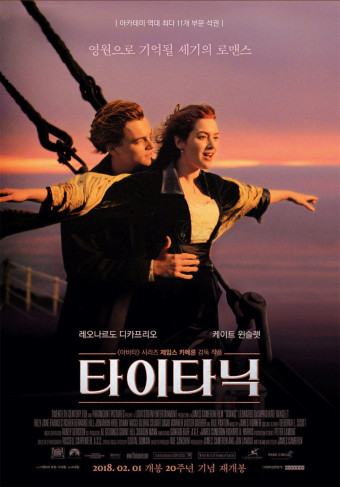
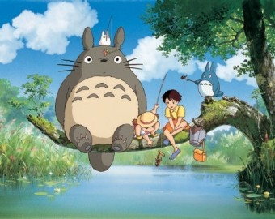
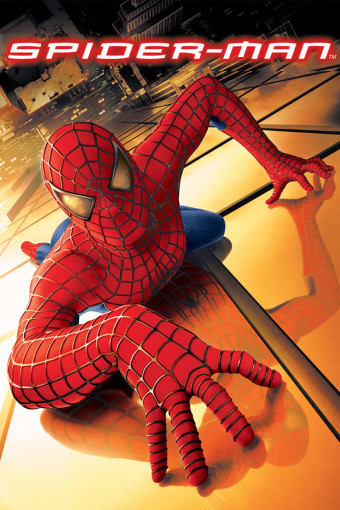
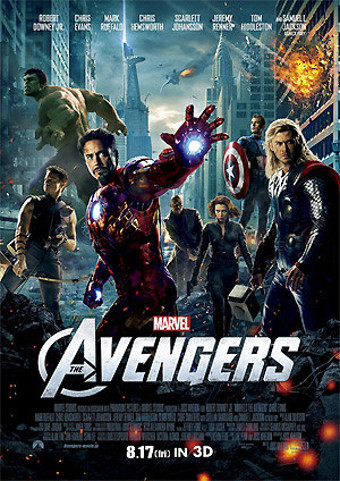

서식지 : 경성남도 거제시 장평동
근무지 : 서울 강남구 테헤란로 411 13층
안녕하세요~ 해달 좋아하는 다르입니다 소통해요~ 😄
| 순위 | 제목 | 포스터 | 줄거리 | 바로가기 |
|---|---|---|---|---|
| 1 | 나는 내일 어제의 너와 만난다 | 스무 살의 ‘타카토시’는 지하철에서 우연히 만난 ‘에미’를 보고 순식간에 마음을 빼앗긴다. 운명 같은 끌림을 느낀 타카토시의 고백으로 두 사람은 연인이 되고, 매일 만나 행복한 데이트를 한다. 하지만, 왠지 종종 의미를 알 수 없는 눈물을 보이던 에미로부터 믿을 수 없는 비밀을 듣게 된 타카토시는 큰 혼란에 빠진다. 그 비밀은 바로 타카토시와 에미의 시간은 서로 반대로 흐르고 있고, 교차되는 시간 속에서 함께 할 수 있는 시간은 오직 30일뿐이라는 것. 30일 후에도, 이 사랑은 계속될 수 있을까? | 링크 바로가기 | |
| 2 | 타이타닉 |  | "내 인생의 가장 큰 행운은 당신을 만난 거야" 우연한 기회로 티켓을 구해 타이타닉호에 올라탄 자유로운 영혼을 가진 화가 ‘잭’(레오나르도 디카프리오)은 막강한 재력의 약혼자와 함께 1등실에 승선한 ‘로즈’(케이트 윈슬렛)에게 한눈에 반한다. 진실한 사랑을 꿈꾸던 ‘로즈’ 또한 생애 처음 황홀한 감정에 휩싸이고, 둘은 운명 같은 사랑에 빠지는데… 가장 차가운 곳에서 피어난 뜨거운 사랑! 영원히 가라앉지 않는 세기의 사랑이 펼쳐진다! | 링크 바로가기 |
| 3 | 토토로 |  | 도시를 떠나 시골로 이사 온 ‘사츠키’와 ‘메이’는 우연히 숲속에 살고 있는 신비로운 생명체 ‘토토로’를 만나 신비한 모험을 함께 한다. 그러던 어느 날, 어머니의 병원에서 위태로운 소식이 도착하고 언니 ‘사츠키’가 정신없이 아빠에게 연락을 취하는 와중에 ‘메이’가 행방불명 되는데… | 링크 바로가기 |
| 4 | 스파이더맨 |  | 평범하고 내성적인 학생 피터 파커, 그는 우연히 유전자가 조작된 슈퍼거미에 물린다. 그 후, 피터는 손에서 거미줄이 튀어 나오고 벽을 기어 오를 수 있는 거미와 같은 능력을 갖게 된다. 다가오는 위험을 본능적으로 감지하는 초감각과 엄청난 파워까지. 피터는 짝사랑하던 '메리 제인'의 관심을 끌기 위해 멋진 스포츠카를 구입하는데 초능력을 처음 사용한다. 그러다 사랑하는 벤 아저씨의 죽음을 계기로 엄청난 파워에는 그만큼의 책임이 동반된다는 사실을 | 링크 바로가기 |
| 5 | 어벤져스 |  | 지구의 안보가 위협당하는 위기의 상황에서 슈퍼히어로들을 불러모아 세상을 구하는, 일명 [어벤져스] 작전. 에너지원 ‘큐브’를 이용한 적의 등장으로 인류가 위험에 처하자 국제평화유지기구인 쉴드 (S.H.I.E.L.D)의 국장 닉 퓨리(사무엘 L.잭슨)는 [어벤져스] 작전을 위해 전 세계에 흩어져 있던 슈퍼히어로들을 찾아나선다. 아이언맨(로버트 다우니 주니어)부터 토르(크리스 헴스워스), 헐크(마크 러팔로), 캡틴 아메리카(크리스 에반스)는 물론, 쉴드의 요원인 블랙 위도우(스칼렛 요한슨), 호크 아이(제레미 레너)까지, 최고의 슈퍼히어로들이 [어벤져스]의 멤버로 모이게 되지만, 각기 개성이 강한 이들의 만남은 예상치 못한 방향으로 흘러가는데… 지구의 운명을 건 거대한 전쟁 앞에 [어벤져스] 작전은 성공할 수 있을까? | 링크 바로가기 |
본인 취향 영화